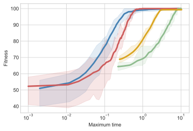
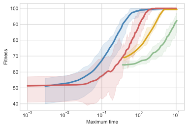

This article is part of my series of projects around Machine Learning. Click here to see the list of projects of this series.
This project is the second assignment of CS-7641 Machine Learning at the Georgia Institute of Technology. The assignment is to study the performance of four randomized optimization algorithms on three optimization problem. Then use the same algorithms to optimize the neural networks from the previous assignment
Methodology
Tools
Everything was done in Python using Visual Studio Code and the Jupyter extension. The randomized optimization library is MLrose I modified copying code from the forks by Hiive for Genetic Algorithm performance and Parkds for MIMIC performance, as well as personal code to log computation time, fitness function calls, and time limits. The machine learning library is SciKit Learn. The plotting library is MatPlotLib PyPlot.
The algorithm of MIMIC is described in Isbell et al. 1997 – MIMIC : Finding Optima by Estimating Probability Densities.
Optimization problems
Methodology
To study the efficiency of the four Optimization Algorithms, I chose three Optimization Problems with differences to show which algorithm works on which kind of problem. All the problems are maximization problems.
For each problem, I first compared the average, minimum and maximum fitness obtained for different sizes of the problem over a number of run with different random seeds. If the size of the problem is too small, the optima will be reached by all algorithms and the study will be useless. The goal was to find a problem size were the advantages of one algorithm over another were clear and the computation time was reasonable.
However, some algorithms (RHC and SA) will reach a plateau very fast and the others (GA and MIMIC) take a lot longer to compute. Therefore, we have to study the fitness over computation time. For this, I modified MLrose and added several features including a time limit for problems and a way to record the fitness and computation time at each iteration. We can thus plot fitness over time for each algorithm.
I thought about studying fitness to iteration but iterations are completely different measures for each algorithm. SA and RHC iterations are simple and fast while MIMIC and GA require way more computation. This metric is meaningless for comparison.
Parameters
The parameters of each algorithms would need to be tuned precisely for each new problem. For practical reasons, I fixed the parameters for all problems to the following :
| Parameter | Value |
|---|---|
| max_attemps (all) | 200 |
| max_iters (all) | np.inf |
| restarts (RHC) | 50 |
| schedule (SA) | ExpDecay |
| pop_size (GA & MIMIC) | 200 |
| mutation_prob (GA) | 0.1 |
| keep_pct (MIMIC) | 0.3 |
However, max_attemps for SA, MIMIC and GA, and restarts for RHC are increased to arbitrary ridiculously high values when studying the fitness over time to allow the algorithm to run for longer.
For problem size and computation time plots, I ran the algorithms 10 times each as we have to take into account the randomness involved. The average is the useful metrics to compare the algorithms and the min-max envelope is given to see if the algorithms are reliable.
Plots
All plots of this part use the same color code : blue for Randomized Hill Climbing, red for Simulated Annealing, green for Genetic Algorithm and yellow for MIMIC. Multiple runs are computed with different random seeds. The average of all runs is the thick line and the min-max envelope is in a lighter color.
Two main experiments are run in order to plot and study the evolution of fitness over the size of the problem (length of the states), and the computation time in seconds.
Four Peaks
The fitness of a bit-string in the four peaks problem is the maximum between the number of leading 1s and the number of trailing 0s. A bonus is given if the number of leading 1s and the number of trailing 0s are both above a threshold defined as a fraction of the size of the problem. This means there are two obvious local optima by increasing the number of leading 1s or the number of trailing 0s with the maxima being when the state is either full of 1s or full of 0s. These optima have a large basin of attraction. But the bonus creates two global optima that should be hard to reach by hill climbing. The higher the bonus threashold is, the narrower its basin of attraction is and the harder the global optima will be to reach. Here I chose the bonus threashold as 25% of the size of the state.
For small sizes of the problem (length of the bit-string), all algorithms but MIMIC reach pretty much all the time the best score (twice the size of the problem with the bonus). That is because the basin of attraction of the smaller local optima are about the same size as that of the global optima.
For larger problems, the basin of attraction is just too appealing and RHC can’t find the global optima at all, while GA and SA perform great. Up to a size of about 100, GA finds the optima almost every time and outperforms SA greatly. This is because when mixing the populations, it might combine an individual with many trailing 0s and one with many leading 1s, creating an individual benefiting from the bonus. With a larger size above 40 though, GA reaches the optimum less frequently and the difference in performance between GA and SA shrinks. Above a size of 80, even GA can’t find the global optima in any of the ten runs.
Now, for a bit-string of length 50, I compared the fitness over computation time.

SA reaches the plateau of 50 corresponding to the local optimum about ten times faster than GA reaches its higher plateau. MIMIC and GA perform about as poorly and worse than the others for short time limits (about 0.35 seconds for the chose parameters). While GA jumps in fitness after that, MIMIC stays underperforming. There is no clear structure and relation between the bits so MIMIC doesn’t have an advantage.
For this study, I increased the number of restarts of RHC to an arbitrary high number so that the algorithm only stops when stagnating for very long. This is why RHC still performs reasonably well. With so many restarts at this relatively small size, RHC has a small chance to benefit from the bonus, as we can see on the previous plot (the maximum is above 50).
One Max
The One Max optimization problem is very simple : the fitness is the number of 1s in the bit-string. This means there is only one optimum and the basin of attraction is the entire state space. RHC and SA should perform great and faster than GA and MIMIC.
Regardless of problem size, all algorithms reach the maximum fitness. This is to be expected for such a simple problem. The time comparison is where the algorithms can be ranked.
As predicted, SA and RHC perform spectacularly better, reaching the optima over ten times faster than GA or MIMIC. SA is slower than RHC as it does more calculations. MIMIC is also slightly faster than GA but not enough for a real appreciation of the algorithm better suiting the structure of the problem itself.
Pairiodic
No this isn’t a typo. The third problem I chose is one I created because I wanted to show one situation where MIMIC performs well. This problem works on a bit-string as well. I tried different versions of the problem :
First, the 4-Pairiodic. The bit-string is divided in four equal parts. The first is the model and we want this model to be periodic on the other parts. We then evaluate the fitness as such : we iterate over the bits of the model and the corresponding bits of each parts. We count the number of times the bit of the model is equal to the bit of each parts. If the bit of the model is different from the three other bits, we give a score of 1, if it is equal to one of the other bits, we give a score of 2, if it is equal to two of the other bits, we give a score of 0 (basically a penalty) but if all bits are the same, then we give a bonus of 5. This creates an optimum harder to reach. The name Pairiodic comes from the fact that we want the pattern to be periodic but only forming pairs.
For example, for the state :
| [1 | 0 | 1 | 1 | 0 | 1 | 0 | 1 | 0 | 0 | 1 | 1 | 0 | 1 | 1 | 1] |
|---|
We can extract the first series :
| [1 | 0 | 1 | 1 | 0 | 1 | 0 | 1 | 0 | 0 | 1 | 1 | 0 | 1 | 1 | 1] | ➜ | [1 | 0 | 0 | 0] |
|---|
The first bit is alone, the score for the first series is 1.
Second series :
| [1 | 0 | 1 | 1 | 0 | 1 | 0 | 1 | 0 | 0 | 1 | 1 | 0 | 1 | 1 | 1] | ➜ | [0 | 1 | 0 | 1] |
|---|
The first bit is in a pair, the score for the second series is 2.
Third series :
| [1 | 0 | 1 | 1 | 0 | 1 | 0 | 1 | 0 | 0 | 1 | 1 | 0 | 1 | 1 | 1] | ➜ | [1 | 0 | 1 | 1] |
|---|
The first bit is in a trio, the score for the third series is 0.
Fourth series :
| [1 | 0 | 1 | 1 | 0 | 1 | 0 | 1 | 0 | 0 | 1 | 1 | 0 | 1 | 1 | 1] | ➜ | [1 | 1 | 1 | 1] |
|---|
The first bit is in a quartet, the score for the fourth series is 5.
The total fitness of the stat is thus 8.
The 6-Pairiodic problem is similar but dividing the state in six and the score for each bits of the model is : 2 for no equal bit, 4 for 1 equal bit (1 pair), 0 for 2, 8 for 3 (2 pairs), 0 for 4 and 16 for 5 (3 pairs).
The 8-Pairiodic is similar with 8 chunks and the scores for 0 to 7 equal bits from the model are correspondingly 2, 4, 0, 8, 0, 16, 0, 32.
And so on for 10-Pairiodic following the same pattern for scores. See the source code on GitHub if necessary. The algorithm doesn't cover edge cases when the length of the states is not a multiple of the problem dimension.
Now the results. I started with the 4-Pairiodic for different problem sizes (the length of the state).
As we can see, the problem size doesn’t change the order of the algorithms and all the algorithms perform about as well. GA and MIMIC still perform slightly better than RHC and SA.
I will assume the same conclusion for the other Pairiodic problems and only study computation time. I picked a size of 100 and studied the fitness over computation time but limited to 30 seconds for practical reasons.
SA and RHC are once again very fast, but given enough time, MIMIC and then GA outperform both by a small margin. Even if MIMIC is slightly faster than GA, the latter performs slightly better.
Then for 4-Pairiodic with a size of 150.
Here MIMIC outperforms GA significantly but a longer computation time might give the first place to GA after all. The result is actually similar to 4-Pairiodic but with RHC and SA performing relatively worse.
And for 8-Pairiodic for a size of 180.
Now MIMIC isn’t as efficient and GA is slightly better at any computation time.
My interpretation is that MIMIC works well when it can detect the structure of the problem. 4-Pairiodic is simple enough that RHC and SA can achieve good fitness. 6-Pairiodic is too difficult for RHC and SA but MIMIC still detects the structure well enough. However, in 8-Pairiodic, MIMIC has more difficulties detecting the entire structure while and loses performance relative to GA that still performs well.
I then tested this hypothesis by extending the study to a 10-Pairiodic problem with a size of 160.
However, MIMIC gained again in performance and is equivalent to GA until it plateaus where GA performs better.
This means the previous explanation is incomplete. Maybe GA performs relatively better when the optima corresponds to an even number of pairs.
Overall, the clear conclusion is that for a heavily structured problem, RHC and SA are not suited and GA and MIMIC should both be considered.
General Observations
Here are some observations common to all problems and help understand the choices I made.
SA and RHC are much simpler and thus faster than MIMIC and GA so will perform way better for small time limits. However, I modified the MLrose library to log the number of calls to the fitness function. For the OneMax problem with a size of 100, RHC called the fitness function 32510 times, SA 425 times, GA 86 times and MIMIC 61 times. For toy problems like the ones use in the assignment, fitness functions are simple and fast so the overhead of each algorithms dominates : RHC is the fastest algorithm and MIMIC usually the slowest. However, more complex problems where the computation time of the fitness function dominates the overhead of each algorithm would reverse the order and the economy of function calls of smarter algorithms such as MIMIC and GA make them more appealing and reveals the huge weakness of RHC.
To illustrate this phenomenon, here is the fitness over computation time for OneMax where I modified the fitness function to add a delay to simulate a more computation expensive problem.
Original One Max
 0.00001 second delay per function call
0.01 second delay per function call
As we can see, increasing the computation time of the fitness function delays the RHC and SA curves way more than the MIMIC and GA curves.
Conclusion
When the optimization problem has few optima and a global optimum with a large basin of attraction, SA and RHC will perform great in terms of optimization and speed. SA is slightly slower but can overcome the trap of small local optimum and it should be preferred over RHC for problems with more local optimum.
When the problem has a more complex underlying structure, SA and RHC will still reach a plateau fast and in applications with limited resources, large amount of data and time constraints, they are a valid option. However, given enough time (around 10 to 100 times longer), GA and MIMIC will usually perform better.
These toy problems have simple fitness functions but, as explained previously, real applications with computation intensive fitness calculations will slow down RHC and SA considerably. MIMIC and GA are better choices for those circumstances.
The advantages between GA and MIMIC are hard to estimate for real life applications using the toy problems described above. They should be both considered and evaluated.
Neural Network optimization
Dataset
The dataset I used in the first assignment was about Wine Quality. It is made available by Paulo Cortez from the University of Minho in Portugal on the UCI Machine Learning Repository. This dataset is used in the paper P. Cortez, A. Cerdeira, F. Almeida, T. Matos and J. Reis - Modeling wine preferences by data mining from physicochemical properties. In Decision Support Systems, Elsevier, 47(4):547-553, 2009. While the dataset contains data for red and white wines, I restricted my analysis to the white wines because the target classes are less unbalanced.
It contains 4898 wines with 11 physiochemical proprieties and a sensory quality score which we want to predict with a classifier. All values are floating-point or integer values which I all scaled to the range from 0 to 1.
I had calculated the accuracy of the naïve distribution classifier at 32.4% and the single-minded classifier at 44.9%. The latter will be the basic comparison for the results of the algorithms.
Methodology
The goal of this part is to compare the accuracy score we obtain by using randomized optimization algorithms to determine the weights and biases of a neural network used for regression on the dataset to the accuracy score of the naïve classifiers and the neural network using the default Adam solver.
Plots
For the learning curves in this part, I plot the accuracy on the training set in red and the accuracy on the testing set in green. The min-max envelope is represented with a lighter color.
Previous results
In the previous assignment, the study of neural networks didn’t lead to good results but a network structure of (12,12,12) had a slightly better accuracy. However, when testing this structure with randomized optimization algorithm, the accuracies were only about 10%. I thus tried different structures and found better results with a single hidden layer of 100 nodes. This will be the network used in every run.
Also, in the previous assignment, we determined that the ‘relu’ activation function lead to the best results. I had used a maximum of 4000 iterations. I will therefore use both of those parameters for this study as well.
Here are the results of the neural network using the Adam solver and the one-layer 100-nodes structure.
| Train accuracy | Test accuracy |
|---|---|
| 59.2% | 52.8% |
Simulated Annealing
For simulated annealing, the only parameter specific to the algorithm we can change is the schedule that determines how the temperature is adjusted during the optimization process. I decided to use the default exponential decay function as hyperparameters are not part of this study.
The first run with the default step size (learning rate) of 0.1 lead to disappointing results. I varied the step size to find a better one.
| Step size | Train accuracy | Test accuracy |
|---|---|---|
| 0.1 | 49.7% | 44.9% |
| 0.25 | 52.7% | 45.8% |
| 0.5 | 52.7% | 48.9% |
| 0.75 | 52.9% | 50.6% |
| 1.0 | 53.6% | 48.4% |
A step size around 0.75 lead to better results and I chose this value.
Looking at the learning curves, we can see the model isn’t overfitting and additional training samples wouldn’t improve accuracy by much.
The results are thus :
| Train accuracy | Test accuracy |
|---|---|
| 52.9% | 50.6% |
This is better than the single-minded classifier but not as good as the reference neural network with the Adam solver.
Random Hill Climbing
As RHC is faster, I allowed it to do 10 restarts to find the optima. This makes it about as computation expensive as SA for this problem. I chose the same step size of 0.75 after checking that there were no significant gains to be made with a different value.
| Train accuracy | Test accuracy |
|---|---|
| 55.0% | 52.1% |
With only one restart, the optimization was faster but produced networks with widely varying results.
RHC produces a better performing network than SA for this problem with enough restarts. And the results approach the original NN but without outperforming it.
Genetic Algorithm
The parameters I used for the genetic algorithm are the default values of a population size of 200 and a mutation rate of 0.1. Again, I checked if a different step size improved performance and settled for the same 0.75.
The learning curves obtained are horrible. The accuracies vary widely and are consistently worse than any of the previous algorithms.
This might be due to suboptimal hyperparameters such as a mutation rate too high (0.1) that creates too much variation and jump over optima that SA and RHC are able to approach more slowly and precisely.
With such learning curves, the accuracies obtained are not relevant, I will therefore only estimate the accuracies as :
| Train accuracy | Test accuracy |
|---|---|
| ~40% | ~40% |
GA took longer to compute and testing the hyper-parameters over a range of value is highly impractical. This algorithm might be too sensitive for this problem and underperform for this reason.
Conclusion
Let’s compare the results of the different classifiers.
| Train accuracy | Test accuracy | |
|---|---|---|
| Single-minded | 44.9% | |
| Adam NN | 59.2% | 52.8% |
| SA NN | 52.9% | 50.6% |
| RHC NN | 55.0% | 52.1% |
| GA NN | ~40% | ~40% |
The default Adam solver is both faster and performs better on this problem. All but maybe GA performed better than the single-minded classifier but the results are still rather poor.
A further study of the effects of the hyper-parameters, maybe with a subset of the dataset for practical reasons, or using a better optimized library would be required to determine conclusively if the random optimization algorithms presented in this study present any advantage over the default Gradient Descent.

This article is part of my series of projects around Machine Learning. Click here to see the list of projects of this series.
Go back to the list of projects